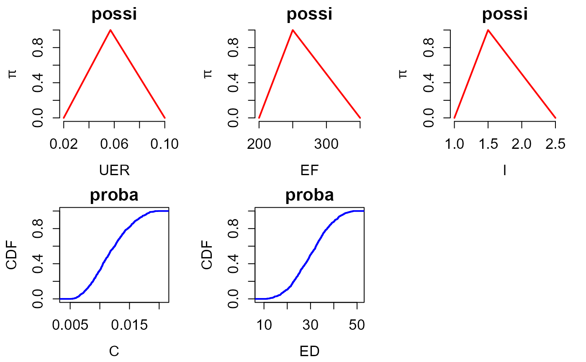
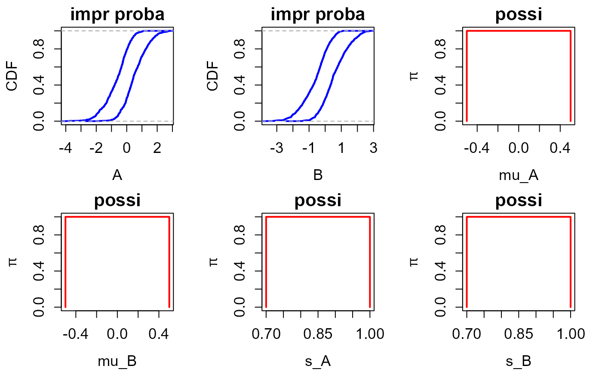

Input distribution (probability or possibility)
create_distr.RdFunction to assign a distribution (probability or possibility) to each uncertain input based on the input definition using CREATE_INPUT()
Arguments
- input
List of inputs derived from the CREATE_INPUT() function.
- DISCR
Number of discretisations to represent the possibility distribution. By default, it is set at 1000.
Value
List of inputs updated with additional arguments
If input$type = "proba" or input$type = "impr proba", new arguments qfun and rfun corresponding to the quantile and random sampling functions.
If input$type = "possi", new argument fuzzy corresponding to the output provided by fuzzy_trapezoid_gset() or fuzzy_triangular_gset() of the package sets.
Details
Details of the theory and example 1 in Dubois & Guyonnet (2011), available at: https://hal-brgm.archives-ouvertes.fr/file/index/docid/578821/filename/Uncertainties_RA_09_l_dg.pdf
Details on the representation via imprecise probability distributions and example 2 in Sch\"obi & Sudret (2016), available at: https://arxiv.org/pdf/1608.05565.pdf
Examples
#################################################
#### EXAMPLE 1 of Dubois & Guyonnet (2011)
#### Probability and Possibility distributions
#################################################
ninput = 5 #Number of input parameters
input = vector(mode = "list", length = ninput) # Initialisation
input[[1]] = create_input(
name = "UER",
type = "possi",
distr = "triangle",
param = c(2.e-2, 5.7e-2, 1.e-1),
monoton = "incr"
)
input[[2]] = create_input(
name = "EF",
type = "possi",
distr = "triangle",
param = c(200, 250, 350),
monoton = "incr"
)
input[[3]] = create_input(
name = "I",
type = "possi",
distr = "triangle",
param = c(1, 1.5, 2.5),
monoton = "incr"
)
input[[4]] = create_input(
name = "C",
type = "proba",
distr = "triangle",
param = c(5e-3, 20e-3, 10e-3)
)
input[[5]] = create_input(
name = "ED",
type = "proba",
distr = "triangle",
param = c(10, 50, 30)
)
####CREATION OF THE DISTRIBUTIONS ASSOCIATED TO THE PARAMETERS
input = create_distr(input)
####PLOT INPUTS
plot_input(input)
#################################################
#### EXAMPLE 2 of Sch\"obi & Sudret (2016)
#### Imprecise Probability distributions
#################################################
ninput = 6 #Number of input parameters
input = vector(mode = "list", length = ninput) # Initialisation
# Imprecise normal probability
# whose parameters are described by the 3rd and 5th parameters
input[[1]] = create_input(
name = "A",
type = "impr proba",
distr = "normal",
param = c(3, 5),
monoton = "dunno"
)
# Imprecise normal probability
# whose parameters are described by the 4th and 6th parameters
input[[2]] = create_input(
name = "B",
type = "impr proba",
distr = "normal",
param = c(4, 6),
monoton = "dunno"
)
# imprecise paramters of afore-described probability distribution
# mean of input number 1 as an interval
input[[3]] = create_input(
name = "mu_A",
type = "possi",
distr = "interval",
param = c(-0.5, 0.5)
)
# mean of input number 2 as an interval
input[[4]] = create_input(
name = "mu_B",
type = "possi",
distr = "interval",
param = c(-0.5, 0.5)
)
# standard deviation of input number 1 as an interval
input[[5]] = create_input(
name = "s_A",
type = "possi",
distr = "interval",
param = c(0.7, 1)
)
# standard deviation of input number 2 as an interval
input[[6]] = create_input(
name = "s_B",
type = "possi",
distr = "interval",
param = c(0.7, 1)
)
####CREATION OF THE DISTRIBUTIONS ASSOCIATED TO THE PARAMETERS
input = create_distr(input)
####PLOT INPUTS
plot_input(input)

